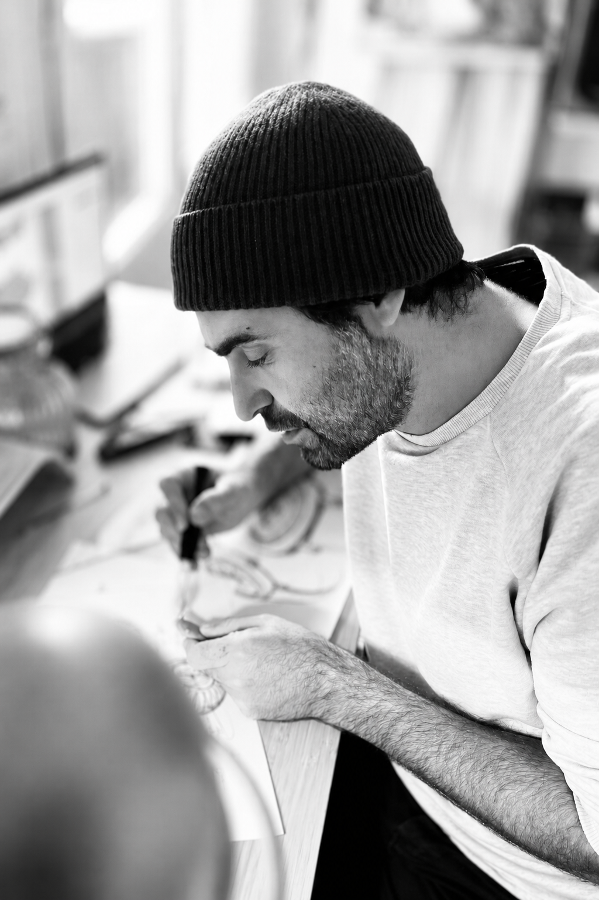

Direction artistique
Définir une vision, construire un langage visuel et assurer la cohérence globale du projet.
Atelier WR · Marseille · Région PACA
Je suis William Rigoulet, designer et directeur artistique installé à Marseille. J’accompagne les entreprises, artisans, maisons de création et porteurs de projets qui souhaitent construire un univers singulier, cohérent et durable.
Parlons de votre projet
Mon approche relie direction artistique, design produit, identité visuelle, graphisme et narration de marque. Chaque collaboration commence par une rencontre, une écoute attentive et la volonté de comprendre ce qui rend un projet véritablement unique.
J’interviens de l’intention initiale jusqu’à la réalisation : positionnement, recherches, création, développement et dialogue avec les ateliers. Cette vision transversale permet de créer une continuité entre le fond, la forme, les objets, les images et la manière dont une marque raconte son histoire.
Des savoir-faire complémentaires pour construire un projet cohérent dans toutes ses dimensions.
Définir une vision, construire un langage visuel et assurer la cohérence globale du projet.
Imaginer des objets utiles et sensibles, de la première recherche jusqu’au développement.
Créer un logo, un système graphique et des supports immédiatement reconnaissables.
Concevoir un emballage qui protège, présente et raconte le produit avec justesse.
Développer des objets exigeants où les proportions, les matières et la précision sont essentielles.
Imaginer des pièces qui associent usage, présence et intégration dans l’espace.
Donner une dimension sensible au projet par le dessin, la peinture et la photographie.
Suivre le développement et préserver l’intention créative jusqu’à la fabrication.
Marseille est un territoire vivant, contrasté et profondément inspirant. La ville rassemble des artisans, créateurs, architectes, restaurateurs, hôteliers, artistes et entrepreneurs aux parcours très différents.
Travailler localement permet de privilégier les échanges directs, les visites d’ateliers, la compréhension des matières et une relation plus étroite avec celles et ceux qui fabriquent.
Je souhaite contribuer à la valorisation de ces savoir-faire et accompagner des projets ancrés dans leur territoire, tout en leur donnant une identité forte et une ambition plus large.
« Je recherche autant des rencontres humaines que des collaborations professionnelles. »
La sincérité, l’authenticité, le respect, la curiosité et le partage sont au cœur de ma manière de travailler. J’apprécie les projets portés par des personnes engagées, qui connaissent la valeur du temps, du geste et du travail bien fait.
Je ne cherche pas à imposer un style. Mon rôle est de comprendre une histoire, de révéler ce qui la rend particulière et de lui donner une forme juste. Les meilleures collaborations naissent d’un dialogue simple, d’une confiance partagée et d’une envie commune de créer quelque chose qui ait du sens.
Parler du projet, de son origine, de ses besoins et de ses ambitions.
Identifier les valeurs, les usages, le public et ce qui rend le projet singulier.
Dessiner, rechercher et construire progressivement une direction.
Donner une forme précise à l’objet, l’identité, l’espace ou l’univers de marque.
Suivre le développement et préserver la cohérence jusqu’à la réalisation.
J’accompagne les artisans et ateliers locaux, maisons de création, architectes, décorateurs, hôtels, restaurants, lieux culturels, marques émergentes, entrepreneurs et institutions du territoire.
Chaque collaboration peut prendre une forme différente : mission ponctuelle, accompagnement global, direction artistique ou échange régulier sur le développement d’une marque.
Un projet à Marseille ou en région Provence-Alpes-Côte d’Azur ?